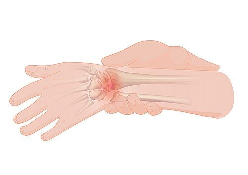

Qué es el dolor
La Asociación Internacional para el Estudio del Dolor lo define como «una experiencia sensorial y emocional desagradable asociada, o similar a la asociada, a un daño real o potencial de los tejidos». Es una experiencia del cerebro, influida por la atención, las emociones, las expectativas y el contexto, y no una simple medida del daño.
El viaje de la señal
- Nociceptores: terminaciones nerviosas de la piel, músculos y órganos que detectan estímulos dañinos (calor, presión, sustancias inflamatorias).
- Fibras nerviosas finas llevan la señal a la médula espinal, donde ya se modula (la teoría de la «puerta» de Melzack y Wall, 1965).
- Sube al tálamo y de allí a varias zonas de la corteza: la somatosensorial (dónde y cuánto duele), la ínsula y el cíngulo (lo desagradable y la emoción).
- El cerebro también puede frenar el dolor desde arriba, con sistemas que liberan endorfinas.
Tipos de dolor
- Nociceptivo: por daño de tejidos (una quemadura, una fractura, la artrosis).
- Neuropático: por lesión de los propios nervios o vías del dolor; quemante, eléctrico, con hormigueo (neuropatía, neuralgia postherpética, neuralgia del trigémino).
- Nociplástico: el sistema nervioso se vuelve hipersensible sin una lesión clara (fibromialgia, algunas formas de dolor lumbar crónico).
Dolor crónico
Cuando dura más de tres meses, el dolor puede convertirse en un problema en sí mismo, con cambios en el sistema nervioso (sensibilización central). Afecta a alrededor de uno de cada cinco adultos. Su tratamiento combina fármacos adecuados al tipo de dolor, ejercicio, terapia psicológica y educación sobre el dolor; los opioides tienen un papel limitado y riesgos importantes a largo plazo.
Fuentes
- Raja SN, et al. The revised IASP definition of pain. Pain. 2020;161:1976-82. doi:10.1097/j.pain.0000000000001939.
- Fitzcharles MA, et al. Nociplastic pain: towards an understanding of prevalent pain conditions. Lancet. 2021;397:2098-110. doi:10.1016/S0140-6736(21)00392-5.